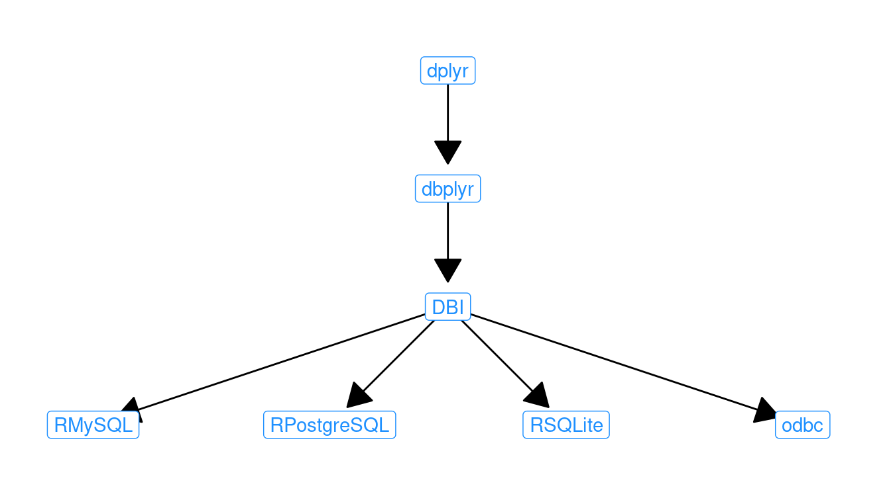

F Setting up a database server
Setting up a local or remote database server is neither trivial nor difficult. In this chapter, we provide instructions as to how to set up a local database server on a computer that you control. While everything that is done in this chapter can be accomplished on any modern operating system, many tools for data science are designed for UNIX-like operating systems, and can be a challenge to set up on Windows. This is no exception. In particular, comfort with the command line is a plus and the material presented here will make use of UNIX shell commands. On Mac OS X and other Unix-like operating systems (e.g., Ubuntu), the command line is accessible using a Terminal application. On Windows, some of these shell commands might work at a DOS prompt, but others will not.42 Unfortunately, providing Windows-specific setup instructions is outside the scope of this book.
Three open-source SQL database systems are most commonly encountered. These include SQLite, MySQL, and PostgreSQL. While MySQL and PostgreSQL are full-featured relational database systems that employ a strict client-server model, SQLite is a lightweight program that runs only locally and requires no initial configuration. However, while SQLite is certainly the easiest system to set up, it has has far fewer functions, lacks a caching mechanism, and is not likely to perform as well under heavy usage. Please see the official documentation for appropriate uses of SQLite for assistance with choosing the right SQL implementation for your needs.
Both MySQL and PostgreSQL employ a client-server architecture. That is, there is a server program running on a computer somewhere, and you can connect to that server from any number of client programs—from either that same machine or over the internet. Still, even if you are running MySQL or PostgreSQL on your local machine, there are always two parts: the client and the server. This chapter provides instructions for setting up the server on a machine that you control—which for most analysts, is your local machine.
F.1 SQLite
For SQLite, there is nothing to configure, but it must be installed.
The RSQLite package embeds the database engine and provides a straightforward interface.
On Linux systems, sqlite is likely already installed, but the source code, as well as pre-built binaries for Mac OS X and Windows, is available at SQLite.org.
F.2 MySQL
We will focus on the use of MySQL (with brief mention of PostgreSQL in the next section). The steps necessary to install a PostgreSQL server will follow similar logic, but the syntax will be importantly different.
F.2.1 Installation
If you are running Mac OS X or a Linux-based operating system, then you probably already have a MySQL server installed and running on your machine. You can check to see if this is the case by running the following from your operating system’s shell (i.e., the command line or using the “Terminal” application).
ps aux | grep "mysql"bbaumer@bbaumer-Precision-Tower-7810:~$ ps aux | grep "mysql"
mysql 1269 0.9 2092204 306204 ? Ssl May20 5:22 /usr/sbin/mysqldIf you see anything like the first line of this output (i.e., containing mysqld), then MySQL is already running. (If you don’t see anything like that, then it is not.)
If MySQL is not installed, then you can install it by downloading the relevant version of the MySQL Community Server for your operating system at dev.mysql.com. If you run into trouble, please consult the installation instructions.
For Mac OS X, there are more specific instructions available. After installation, you will need to install the Preference Pane and start the server.
It is also helpful to add the mysql binary directory to your PATH environment variable, so you can launch mysql easily from the shell. To do this, execute the following command in your shell:
export PATH=$PATH:/usr/local/mysql/bin
echo $PATHYou may have to modify the path to the mysql/bin directory to suit your local setup.
If you don’t know where the directory is, you can try to find it using the which program provided by your operating system.
which mysql/usr/local/mysql/binF.2.2 Access
In most cases, the installation process will result in a server process being launched on your machine, such as the one that we saw above in the output of the ps command. Once the server is running, we need to configure it properly for our use. The full instructions for post-installation provide great detail on this process. However, in our case, we will mostly stick with the default configuration, so there are only a few things to check.
The most important thing is to gain access to the server. MySQL maintains a set of user accounts just like your operating system. After installation, there is usually only one account created: root. In order to create other accounts, we need to log into MySQL as root. Please read the documentation on Securing the Initial MySQL Accounts for your setup. From that documentation:
Some accounts have the user name
root. These are superuser accounts that have all privileges and can do anything. If these root accounts have empty passwords, anyone can connect to the MySQL server as root without a password and be granted all privileges.
If this is your first time accessing MySQL, typing this into your shell might work:
mysql -u root
If you see an Access denied error, it means that the root MySQL user has a password, but you did not supply it. You may have created a password during installation. If you did, try:
mysql -u root -p
and then enter that password (it may well be blank). If you don’t know the root password, try a few things that might be the password. If you can’t figure it out, contact your system administrator or re-install MySQL.
You might—on Windows especially—get an error that says something about “command not found.”
This means that the program mysql is not accessible from your shell. You have two options: 1) you can specify the full path to the MySQL application; or 2) you can append your PATH variable to include the directory where the MySQL application is. The second option is preferred and is illustrated above.
On Linux or Mac OS X, it is probably in /usr/bin/ or /usr/local/mysql/bin or something similar, and on Windows, it is probably in \Applications\MySQL Server 5.6\bin or something similar.
Once you find the path to the application and the password, you should be able to log in. You will know when it works if you see a mysql prompt instead of your usual one.
bbaumer@bbaumer-Precision-Tower-7810:~$ mysql -u root -p
Enter password:
Welcome to the MySQL monitor. Commands end with ; or \g.
Your MySQL connection id is 47
Server version: 5.7.31-0ubuntu0.18.04.1 (Ubuntu)
Copyright (c) 2000, 2020, Oracle and/or its affiliates. All rights reserved.
Oracle is a registered trademark of Oracle Corporation and/or its
affiliates. Other names may be trademarks of their respective
owners.
Type 'help;' or '\h' for help. Type '\c' to clear the current input
statement.
mysql> Once you are logged into MySQL, try running the following command at the mysql> prompt (do not forget the trailing semi-colon):43.
SELECT User, Host, Password FROM mysql.user;This command will list the users on the MySQL server, their encrypted passwords, and the hosts from which they are allowed to connect.
Next, if you want to change the root password, set it to something else (in this example mypass).
UPDATE mysql.user SET Password = PASSWORD('mypass') WHERE User = 'root';
FLUSH PRIVILEGES;
The most responsible thing to do now is to create a new account for yourself. You should probably choose a different password than the one for the root user. Do this by running:
CREATE USER 'r-user'@'localhost' IDENTIFIED BY 'mypass';It is important to understand that MySQL’s concept of users is really a \(\{user, host\}\) pair. That is, the user 'bbaumer'@'localhost' can have a different password and set of privileges than the user 'bbaumer'@'%'. The former is only allowed to connect to the server from the machine on which the server is running. (For most of you, that is your computer.) The latter can connect from anywhere ('%' is a wildcard character). Obviously, the former is more secure. Use the latter only if you want to connect to your MySQL database from elsewhere.
You will also want to make yourself a superuser.
GRANT ALL PRIVILEGES ON *.* TO 'r-user'@'localhost' WITH GRANT OPTION;Again, flush the privileges to reload the tables.
FLUSH PRIVILEGES;Finally, log out by typing quit. You should now be able to log in to MySQL as yourself by typing the following into your shell:
mysql -u r-user -pF.2.2.1 Using an option file
A relatively safe and convenient method of connecting to MySQL servers (whether local or remote) is by using an option file. This is a simple text file located at ~/.my.cnf that may contain various connection parameters. Your entire file might look like this:
[client]
user=r-user
password="mypass"These options will be read by MySQL automatically anytime you connect from a client program. Thus, instead of having to type:
mysql -u yourusername -pyou should be automatically logged on with just mysql. Moreover, you can have dplyr read your MySQL option file using the default.file argument (see Section F.4.3.1).
F.2.3 Running scripts from the command line
MySQL will run SQL scripts contained in a file via the command line client. If the file myscript.sql is a text file containing MySQL commands, you can run it using the following command from your shell:
mysql -u yourusername -p dbname < myscript.sqlThe result of each command in that script will be displayed in the terminal. Please see Section 16.3 for an example of this process in action.
F.3 PostgreSQL
Setting up a PostgreSQL server is logically analogous to the procedure demonstrated above for MySQL. The default user in a PostgreSQL installation is postgres and the default password is either postgres or blank. Either way, you can log into the PostgreSQL command line client—which is called psql—using the sudo command in your shell.
sudo -u postgres psqlThis means: “Launch the psql program as if I was the user postgres.” If this is successful, then you can create a new account for yourself from inside PostgreSQL. Here again, the procedure is similar to the procedure demonstrated above for MySQL in section F.2.2.
You can list all of the PostgreSQL users by typing at your postgres prompt:
\duYou can change the password for the postgres user:
ALTER USER postgres PASSWORD 'some_pass';Create a new account for yourself:
CREATE USER yourusername SUPERUSER CREATEDB PASSWORD 'some_pass';Create a new database called airlines:
CREATE DATABASE airlines;Quit the psql client by typing:
\qNow that your user account is created, you can log out and back in with the shell command:
psql -U yourusername -WIf this doesn’t work, it is probably because the client authentication is set to ident instead of md5. Please see the documentation on client authentication for instructions on how to correct this on your installation, or simply continue to use the sudo method described above.
F.4 Connecting to SQL
There are many different options for connecting to and retrieving data from an SQL server. In all cases, you will need to specify at least four pieces of information:
host: the name of the SQL server. If you are running this server locally, that name islocalhostdbname: the name of the database on that server to which you want to connect (e.g.,airlines)user: your username on the SQL serverpassword: your password on the SQL server
F.4.1 The command line client
From the command line, the syntax is:
mysql -u username -p -h localhost dbnameAfter entering your password, this will bring you to an interactive MySQL session, where you can bounce queries directly off of the server and see the results in your terminal. This is often useful for debugging because you can see the error messages directly, and you have the full suite of MySQL directives at your disposal. On the other hand, it is a fairly cumbersome route to database development, since you are limited to text-editing capabilities of the command line.
Command-line access to PostgreSQL is provided via the psql program described above.
F.4.2 GUIs
The MySQL Workbench is a graphical user interface (GUI) that can be useful for configuration and development. This software is available on Windows, Linux, and Mac OS X. The analogous tool for PostgreSQL is pgAdmin, and it is similarly cross-platform. sqlitebrowser is another cross-platform GUI for SQLite databases.
These programs provide full-featured access to the underlying database system, with many helpful and easy-to-learn drop-down menus. We recommend developing queries and databases in these programs, especially when learning SQL.
F.4.3 R and RStudio
The downside to the previous approaches is that you don’t actually capture the data returned by your queries, so you can’t do anything with them. Using the GUIs, you can of course save the results of any query to a CSV. But a more elegant solution is to pull the data directly into R. This functionality is provided by the RMySQL, RPostgreSQL, and RSQLite packages. The DBI package provides a common interface to all three of the SQL back-ends listed above, and the dbplyr package provides a slicker interface to DBI. A schematic of these dependencies is displayed in Figure F.1. We recommend using either the dplyr or the DBI interfaces whenever possible, since they are implementation agnostic.

Figure F.1: Schematic of SQL-related R packages and their dependencies.
For most purposes (e.g., SELECT queries) there may be significant convenience to using the dplyr interface. However, the functionality of this construction is limited to SELECT queries. Thus, other SQL directives (e.g., EXPLAIN, INSERT, UPDATE, etc.) will not work in the dplyr construction. This functionality must be accessed using DBI.
In what follows, we illustrate how to connect to a MySQL backend using dplyr and DBI. However, the instructions for connecting to a PostgreSQL and SQLite are analogous. First, you will need to load the relevant package.
library(RMySQL)F.4.3.1 Using dplyr and tbl()
To set up a connection to a MySQL database using dplyr, we must specify the four parameters outlined above, and save the resulting object using the dbConnect() function.
library(dplyr)
db <- dbConnect(
RMySQL::MySQL(),
dbname = "airlines", host = "localhost",
user = "r-user", password = "mypass"
)If you have a MySQL option file already set up (see Section F.2.2.1), then you can alternatively connect using the default.file argument. This enables you to connect without having to type your password, or save it in plaintext in your R scripts.
db <- dbConnect(
RMySQL::MySQL(),
dbname = "airlines", host = "localhost",
default.file = "~/.my.cnf"
)Next, we can retrieve data using the tbl() function and the sql() command.
res <- tbl(db, sql("SELECT faa, name FROM airports"))
res# Source: SQL [?? x 2]
# Database: mysql 5.7.33-log
# [@mdsr.cdc7tgkkqd0n.us-east-1.rds.amazonaws.com:/airlines]
faa name
<chr> <chr>
1 04G Lansdowne Airport
2 06A Moton Field Municipal Airport
3 06C Schaumburg Regional
4 06N Randall Airport
5 09J Jekyll Island Airport
6 0A9 Elizabethton Municipal Airport
7 0G6 Williams County Airport
8 0G7 Finger Lakes Regional Airport
9 0P2 Shoestring Aviation Airfield
10 0S9 Jefferson County Intl
# … with more rowsNote that the resulting object has class tbl_sql.
class(res)[1] "tbl_MySQLConnection" "tbl_dbi" "tbl_sql"
[4] "tbl_lazy" "tbl" Note also that the derived table is described as having an unknown number of rows (indicated by ??).
This is because dplyr is smart (and lazy) about evaluation.
It hasn’t actually pulled all of the data into R.
To force it to do so, use collect().
collect(res)# A tibble: 1,458 × 2
faa name
<chr> <chr>
1 04G Lansdowne Airport
2 06A Moton Field Municipal Airport
3 06C Schaumburg Regional
4 06N Randall Airport
5 09J Jekyll Island Airport
6 0A9 Elizabethton Municipal Airport
7 0G6 Williams County Airport
8 0G7 Finger Lakes Regional Airport
9 0P2 Shoestring Aviation Airfield
10 0S9 Jefferson County Intl
# … with 1,448 more rowsF.4.3.2 Writing SQL queries
In Section F.4.3.1, we used the tbl() function to interact with a table stored in a SQL database. This enabled us to use dplyr functions directly, without having to write any SQL queries.
In this section, we use the dbGetQuery() function from the DBI package to send an SQL command to the server and retrieve the results.
dbGetQuery(db, "SELECT faa, name FROM airports LIMIT 0,5") faa name
1 04G Lansdowne Airport
2 06A Moton Field Municipal Airport
3 06C Schaumburg Regional
4 06N Randall Airport
5 09J Jekyll Island AirportUnlike the tbl() function from dplyr, dbGetQuery() can execute arbitrary SQL commands, not just SELECT statements. So we can also run EXPLAIN, DESCRIBE, and SHOW commands.
dbGetQuery(db, "EXPLAIN SELECT faa, name FROM airports") id select_type table partitions type possible_keys key key_len ref
1 1 SIMPLE airports <NA> ALL <NA> <NA> <NA> <NA>
rows filtered Extra
1 1458 100 <NA>dbGetQuery(db, "DESCRIBE airports") Field Type Null Key Default Extra
1 faa varchar(3) NO PRI
2 name varchar(255) YES <NA>
3 lat decimal(10,7) YES <NA>
4 lon decimal(10,7) YES <NA>
5 alt int(11) YES <NA>
6 tz smallint(4) YES <NA>
7 dst char(1) YES <NA>
8 city varchar(255) YES <NA>
9 country varchar(255) YES <NA> dbGetQuery(db, "SHOW DATABASES") Database
1 information_schema
2 airlines
3 fec
4 imdb
5 lahman
6 nyctaxiF.4.4 Load into SQLite database
A process similar to the one we exhibit in Section 16.3 can be used to create a SQLite database, although in this case it is not even necessary to specify the table schema in advance. Launch sqlite3 from the command line using the shell command:
sqlite3Create a new database called babynames in the current directory using the .open command:
.open babynamesdata.sqlite3Next, set the .mode to csv, import the two tables, and exit.
.mode csv
.import babynames.csv babynames
.import births.csv births
.exitThis should result in an SQLite database file called babynamesdata.sqlite3 existing in the current directory that contains two tables. We can connect to this database and query it using dplyr.
db <- dbConnect(RSQLite::SQLite(), "babynamesdata.sqlite3")
babynames <- tbl(db, "babynames")
babynames %>%
filter(name == "Benjamin")# Source: lazy query [?? x 5]
# Database: sqlite 3.30.1
# [/home/bbaumer/Dropbox/git/mdsr2e/babynamesdata.sqlite3]
year sex name n prop
<chr> <chr> <chr> <chr> <chr>
1 1976 F Benjamin 53 3.37186805943904e-05
2 1976 M Benjamin 10680 0.0065391571834601
3 1977 F Benjamin 63 3.83028784917178e-05
4 1977 M Benjamin 12112 0.00708409319279004
5 1978 F Benjamin 73 4.44137806835342e-05
6 1978 M Benjamin 11411 0.00667764880752091
7 1979 F Benjamin 79 4.58511127310548e-05
8 1979 M Benjamin 12516 0.00698620342042644
9 1980 F Benjamin 80 4.49415983928884e-05
10 1980 M Benjamin 13630 0.00734980487697031
# … with more rowsAlternatively, the RSQLite package includes a vignette describing how to set up a database from within R.
NB: As of version 5.7, the
mysql.usertable include the fieldauthentication_stringinstead ofpassword.↩︎